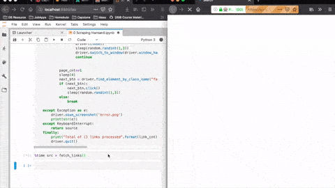
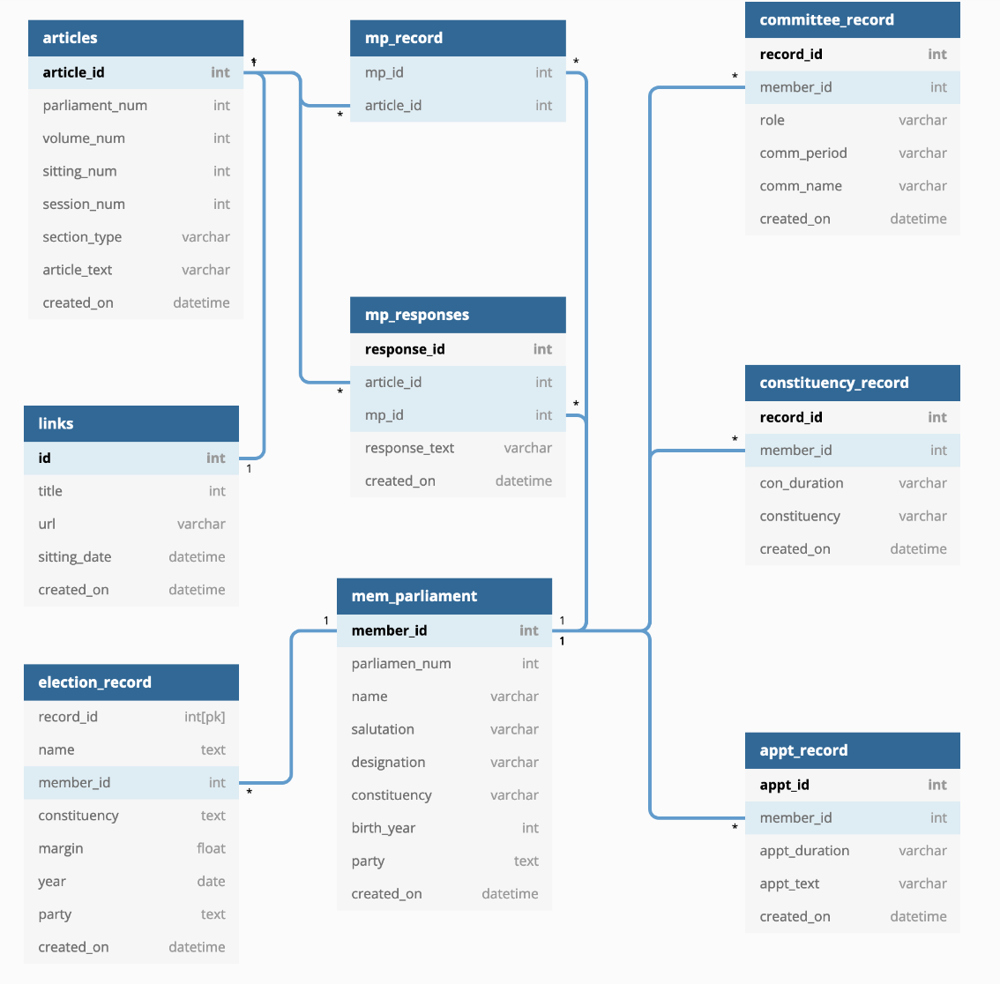
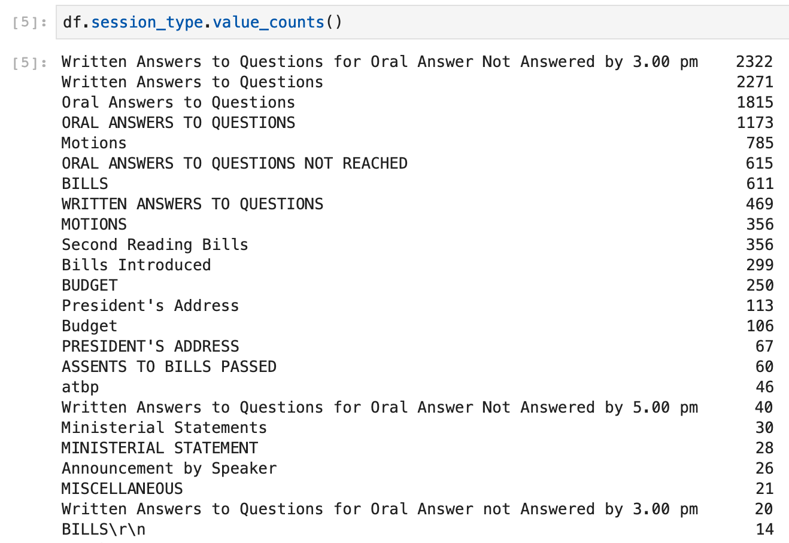
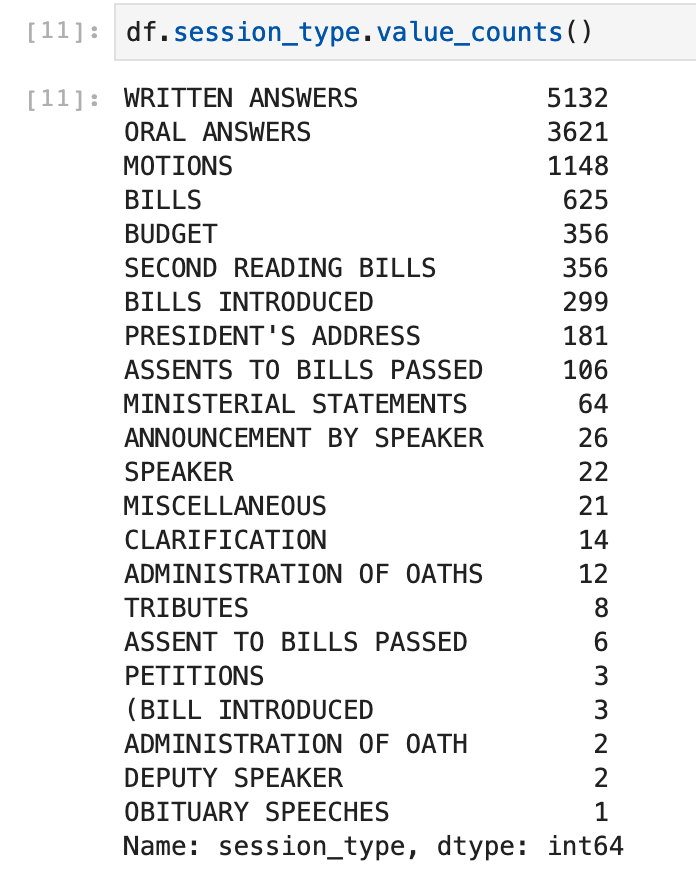
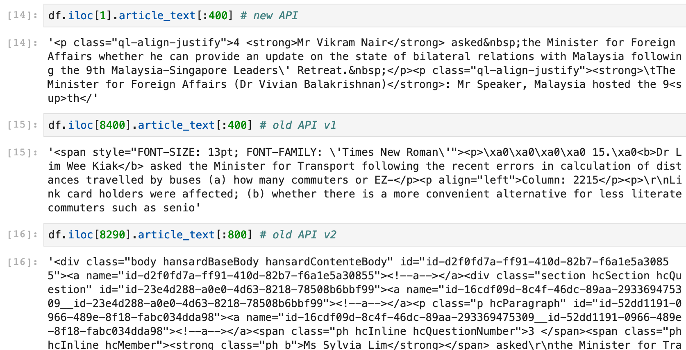
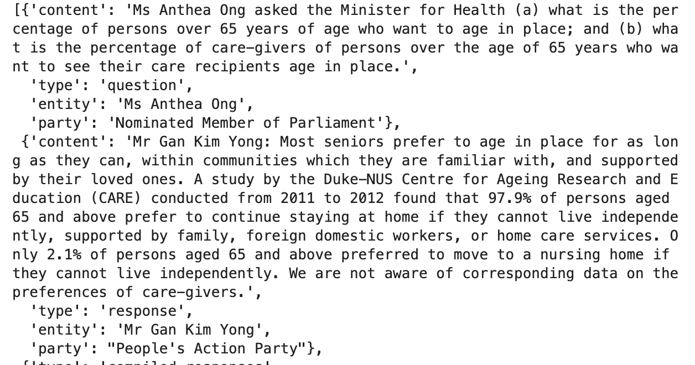

This is the first of a multi part series that details the processes behind FastParliament.
Table of Contents
Motivation
As part of General Assembly’s Data Science Immersive 3 month course that I was enrolled in, each student was tasked to produce a capstone project. In a nutshell, the capstone is meant to showcase the various aspects of the data science process that was taught throughout the 3 month course.
During the inital ideation proccess, I mainly focused on projects that:
- Was relatable to the public
- Had an interactive element built in
From these two criteria, I came up with two initial ideas.
The first idea was a computer vision related project. The broader concept was that I wanted to design a system to identify individuals based on their gait. While I didn’t end up going through with this project, I have written a short write-up that documented my time with this project as well as some of key learning.
The second idea, which was the one that I went ahead with - was to implement and deploy a summarizer for parliamentary speeches. More importantly, it stemmed from my interest to inject some ‘fresh’ conversations into the parliamentary debates. Accordingly, I wanted to generate new insights on the unstructured parliamentary corpus.
Introduction
This post forms the first of a multi-part series that aims to provide you, the reader, with a broader understanding of the various processes and approaches that went into my capstone, FastParliament.
Ideally, I wanted to make the experience of viewing parliamentary debates more interesting , as well as uncover insights into the documents with Natural Language Processing (NLP) methods. Namely, I found three possible areas of improvement when compared to the existing solution:
- Reducing verbosity of existing debates.
- Understand how certain topics evolve over time.
- Find a better way to recommend related documents beyond keyword searches.
Also, I acknowledge that this is not the first time something like this has been done. Hansard Browser by a team of SMU post-grads in 2015 has a similar flavor.
In my implementation, I wanted to integrate a summarizer, recommender system as well as topic modeling using more recent technologies such as Text Rank, Doc2Vec and LDA - which I will elaborate in the subsequent posts.
In this first post, I will touch on:
- Data Gathering
- Data Storage Architecture & DB normalisation
- Preliminary Data Cleaning
Data Gathering
As part of the objectives of generating insights into the existing parliamentary debates, data had to be collected from the hansard. Interestingly (or not), the Singapore Hansard does not have an easily callable API to get data. While one can request for documents either by sitting or member of parliament, it made data gathering cumbersome if done manually.
I then had to use a combination of selenium and requests, to get the data.

Interestingly, during the scraping process itself I discovered that there were distinct changes in the way the documents were being served to the end user. There were inconsistencies in the document URL and the HTML formatting of the actual document that was being displayed. While it was not very obvious to the end-user, it made scraping tough as various exception handling methods had to be implemented to ensure that the scraping could continue uninterrupted.
Data Storage
Next, I had to figure out a way to store the documents that was being collected by the hansard scraper. While a simple approach was to append a pandas dataframe continuously for each document that was successfully scraped, it may not be a scalable approach for a large document corpus like the hansard. Futhermore, organising the dataframe by metadata may be challenging down the road.
With these considerations, I then looked at postgreSQL as a solution to my requirements. Thereafter, I devised a schema (below) that seeks to best capture the essence of how I wanted my documents to be managed.
As a generality, since I wanted to capture relationships within each document, as well as tie such relationships in to the actual member of parliament - there had to encompass multiple tables with one to many and many to many relationshps to do so.

As you can see above, I applied various database normalisation approaches to ensure that the data didn’t look like a giant excel table 🤣.
Once the database was created, I used SQLAlchemy as a wrapper to allow the scraper to interface with the database - ensuring that the document insertions also captured the various relationships I highlighted above. Object Relational Mapper (ORMs) such as SQLAlchemy abstract out the grittier aspects of database interactions.
Preliminary Data Cleaning
To narrow the scope of the project, I chose to focus on a ten-year period of 2009 to 2019. Once that was done, I wanted to get a sense of how the meta-data of the Hansard was distributed.

As you probably guessed, the data coming out doesn’t really look very nice. We see plenty of duplicates and certain formatting quirks. I then applied various cleaning techniques as you an see below.
# Convert to all upper case
df.session_type = df.session_type.map(lambda x : x.upper())
# Shorten any clarification XXXX to CLARIFICATION
df.session_type = df.session_type.map(lambda x : 'CLARIFICATION' if re.search('CLARIFICATION',x) else x)
# Convert ATBP to 'ASSENTS TO BILLS PASSED'
df.session_type = df.session_type.map(lambda x : 'ASSENTS TO BILLS PASSED' if re.search('ATBP',x) else x)
# remove \t\r\n
df.session_type = df.session_type.map(lambda x : re.sub('\t|\r\n','',x))
# Convert all variations of written answers to WRITTEN ANSWERS
df.session_type = df.session_type.map(lambda x : 'WRITTEN ANSWERS' if re.search('WRITTEN ANSWER',x) else x)
# Convert all variations of oral answers to ORAL ANSWERS
df.session_type = df.session_type.map(lambda x : 'ORAL ANSWERS' if re.search('ORAL ANSWER',x) else x)
# Clean 'PRESIDENT'S ADDRESS"
df.session_type = df.session_type.map(lambda x : "PRESIDENT'S ADDRESS" if re.search("PRESIDENT'S ADDRESS",x) else x)
# Clean MINISTERIAL STATEMENT
df.session_type = df.session_type.map(lambda x : "MINISTERIAL STATEMENTS" if re.search("MINISTERIAL STATEMENT",x) else x)
# Clean BILLS INTRODUCED
df.session_type = df.session_type.map(lambda x : "(BILL INTRODUCED" if re.search("(BILL|BILL'S) INTRODUCED",x) else x)
# Clean MOTION
df.session_type = df.session_type.map(lambda x : "MOTIONS" if re.search("MOTION",x) else x)What comes out, is much better than before:

As that was put out of the way, I then focused on the crux of the project - the actual speech contents. What I did not expect, though was that there were multiple ways that the speeches were not being served to the end-user the same way. It appeared that, as time went by, the content administrators changed some of their html markup.

That was annoying, but not difficult to address. I then created a parser to convert the html text to the following:
- HTML markup to plain text
- Divide the text into chunks (each speaker is a chunk)
The end product was below:

It used a combination of the fuzzywuzzy library for string matching as well as a chockful of regex functions to be able to match each chunks to the speaker as well as match it to the appropriate political party or role.
With the aspects of data gathering, management and cleaning out of the way, I could then proceed to the next step - text summarization, topic modeling and content based recommender.